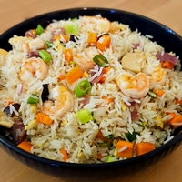

Né dans la ville de Yangzhou, dans la province du Jiangsu, ce plat est souvent à tort appelé riz cantonais en France.
La recette proposée ici est une version authentique « premium » contenant beaucoup d'ingrédients variés. Cependant, n’hésitez pas à la réinventer à votre façon, car l’âme de ce plat réside dans l’art d’improviser avec les restes de votre réfrigérateur.
grammes de
grammes de
grammes de
grammes de
grammes de
grammes de
grammes de
cuillère à café de
cuillère à café de
cuillère à café de
cuillère à café de
cuillère à café de
cuillère à café de
cuillère à café de
cuillère à café de
Le riz frit et l’humidité ne font pas bon ménage. Afin d'avoir un riz sec, beaucoup de recettes recommandent du riz de la veille mais ce n'est pas une obligation: vous pouvez aussi tout simplement le cuire avec un ratio eau/riz plus faible. Si vous utilisez du riz cuit de la veille, vous pouvez sauter l'étape 1 de la recette.
Pour le type de riz, choisissez un riz long à faible teneur en amidon tel que le basmati ou le thaï.
Vous pouvez remplacer le char siu par d'autres viandes. Pour une touche authentique, optez pour des saucisses chinoises lap cheong ou du jambon cru de Jinhua. Sinon, le jambon ibérique ou le prosciutto cru feront d'excellents substituts.
Les pousses de bambous sont vendues en conserves dans la plupart des épiceries asiatiques mais vous pouvez les remplacer par des carottes.
Réhydratez les shiitake séchés (4) dans de l'eau chaude pendant 2 heures.
Lavez le riz (450g) trois fois ou jusqu'à ce que l'eau devienne claire.
Faites cuire le riz dans 375g d'eau.
Étalez-le sur une assiette et laissez-le refroidir.
Battez les œufs (2) dans un bol.
Coupez les shiitakes en cubes.
Hachez le vert des cébettes (4).
Tranchez le char siu (30g) et les pousses de bambou (40g) en cubes.
Tranchez le porc (50g) et le poulet (50g) en cubes et mélangez avec une marinade sèche composée de sel (¼ cuillère à café), fécule de maïs (½ cuillère à café) et sucre (½ cuillère à café).
Coupez vos crevettes (70g) en morceaux si elles sont grosses et mélangez avec une marinade sèche composée de sel (¼ cuillère à café) et fécule de maïs (½ cuillère à café).
Préparez la sauce: mélangez dans un bol le bouillon (1 cuillère à café), sel (½ cuillère à café), le sucre (1 cuillère à café), le glutamate (¼ de cuillère à café) et le vin de Shaoxing (1 cuillère à café).
Dans un wok, faites chauffer l'huile (1 cuillère à soupe) à feu moyen-fort et faites-la tourner pour bien napper le wok et obtenir une surface antiadhésive.
Faites cuire vos crevettes pendant 1 minute jusqu'à ce qu'elle changent de couleur puis retirez-les.
Toujours à feu moyen-fort, faites sauter le porc et poulet pendant environ 1 minute.
Ajoutez les shiitake, remuez 30 secondes.
Ajoutez le char siu, remuez 30 secondes.
Ajoutez les petits pois et les pousses de bambou, remuez 1 minute.
Augmentez le feu à fort puis ajoutez la sauce, mélangez jusqu'à ébullition.
Coupez le feu puis réservez tout le contenu du wok (y compris le liquide).
Refaites chauffer de l'huile (1 cuillère à soupe) à feu moyen-fort et faites-la tourner afin d'obtenir une belle surface antiadhésive.
Baissez le feu à moyen-doux et ajoutez les œufs préalablement battus. Remuez pendant environ 1 minute.
Augmentez le feu à fort, ajoutez le riz. Remuez constamment en alternant deux gestes: appuyer avec la spatule pour défaire les amas de riz et racler et soulever le fond du wok pour éviter qu'il ne colle. L'objectif est d'obtenir des grains secs et séparés les uns des autres.
Une fois que votre riz est bien séparé, ajoutez le reste des ingrédients et mélangez 1 minute.
Servez et dégustez !
